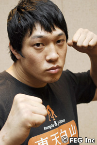
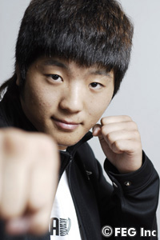
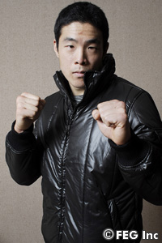
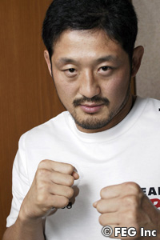
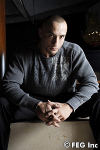
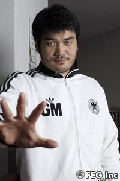
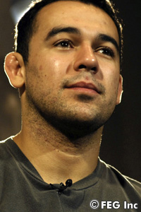
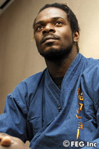

|
 |
【ホ・ミンソク】
──現在のコンディションは？
ホ コンディションはなんの問題もない。態勢は整いました（笑）。
──総合格闘技の戦績は？
ホ 今年の7月までの時点で16戦11勝5敗です。
──過去に対戦相手の頭蓋骨をパンチで折ったそうだが？
ホ 2年前、韓国で行われたトーナメントの大会でのことですね。私はサウスポーなんですが、その時は左の拳を怪我していました。なので右のパンチで折りました。
──そもそも得意なのは左のパンチ？
ホ いえ、今の左拳にダメージがあるので、いまは左右のパンチが得意になってます。
──一番最近の試合であるミノワマン戦を振り返っていかがですか？
ホ とても残念だよ。残念すぎてコメントは出せない。もちろんリベンジしたいね。
──総合を始める前の格闘技歴を教えてください。
ホ 太極拳を習っていました。太極拳には総合での闘いにおいてバリエーションをつけられる打撃がいくつもあるので、結果的に良かったと思います。
──ラグビーもやってたんですよね？
ホ 高校時代、ジュニアの韓国代表でした。
──HERO'Sという格闘技イベントの印象を教えてください。
ホ カーンや秋山と一緒のイベントに出られることは嬉しい。気分いいね。
──対戦相手の柴田選手の印象は？
ホ 面白くて変わった選手というイメージがあります。面白い試合になりそうですね。
──柴田選手の実力はどう思っていますか？
ホ ……私が勝ちます。
──今回の試合にむけて特別な練習はしてきましたか？
ホ サブミッションを重点的にやってきました。試合は関節を極めて勝ちたいと思っている。
──あなたの打撃は具体的にどう凄いのか？
ホ 打撃は私の長所です。連打を繰り出せるところがいいと思っています。
──最後にファンにメッセージをお願いします。
ホ 無条件で勝利をおさめるつもりです。これを機に私はますます強くなって、より高いステージを目指したいと思っています。 |
|
|
|
|
|

|
|
【クォン・アソル】
──体調はいかがですか？
クォン 悪くないです。とてもリラックスしてます。
──総合の戦績は？
クォン プロでは8戦6勝2敗です。
――はじめた時期は？
クォン 19歳、高校3年の時ですね。総合格闘技がスタートです。
──総合を始めたきっかけは？
クォン 特別なきっかけはなくて、知り合いの後輩がやっていたので、なんとなくここまできました。
──あなたのファイトスタイルは？
クォン 攻撃的であること。
──HERO'Sの印象は？
クォン HERO'Sには凄い選手がいっぱい出ていますが、それに負けずに自分の闘いを見せていきたいと思っています。
──対戦相手の中村選手の印象は？
クォン 世界レベルの実力を持った選手だと思います。しかし、最後まで諦めずに自分の闘いをしたいと思っています。ただ殴るだけです。
──ファイターとしての目標は？
クォン 誰でもそうだと思いますが、世界チャンピオンです。
|
|
|
|
|
|

|
|
【イ・ウンス】
──総合を始めたのはいつですか？
イ 2003年。ネット上で総合の試合映像を観てやりたくなった。
──心にピンとくるファイターがいたんですか？
イ エンセン井上選手です。とても根性がある人だなあと思った。
──エンセン選手のファイトスタイルを目指してる？
イ いや、彼の根性、精神性が好きなだけです。
──コンディションはいかがですか？
イ 試合当日にならないとわからない（笑）。
──総合での戦績は？
イ 13戦して10勝3敗。ほとんどがKOかTKO勝ち。
──打撃と寝技はどちらが得意？
イ 打撃です。
──得意技は？
イ アッパーカット。
──練習嫌いだという噂がありますが？
イ いや、好きですよ（笑）。
──一部では"韓国の問題児"と呼ばれているそうですが。
イ ……そういうイメージがついているなら仕方ない（笑）。
──今回の試合の対策は十分できましたか？
イ マゴメド選手の情報があまりない。ムエタイがベースだってことしか知らない。だから特に用意はしてないです。とにかくスッキリした気持ちのいい試合がしたい。
──あなたにとって気持ちのいい試合とは？
イ 勝とうが負けようが、KO決着。
──HERO'Sに初めて出場することなりますが。
イ HERO'Sはイベントとしてとても整備されているという印象がある。とにかくスッキリした闘いをしたい。
──対戦相手のマゴメド選手へメッセージをください。
イ 勝ち負けはとにかくスッキリした試合をやろうぜ！
|
|
|
|
|
|

|
|
【ユン・ドンシク】
──最近の好調の理由は？
ユン いえ、2試合続けて勝ったくらいじゃまだまだ好調とはいえません。もう少し勝ち続けたらもう一回聞いてください（笑）。
──PRIDEで闘っていた頃より明らかに強くなっている印象がありますが。
ユン PRIDEに出ていた頃は、試合で負けても自分自身はどんどん強くなっていました。それが今、いい結果に結びついているということだと思います。
──体調はどうですか？
ユン 大丈夫です。
──韓国ではあなたが試合をするということで反響も多いと思うのですが。
ユン 自分ではどれだけ反響があるのかわかりません。母国だから励みになる一方、緊張もすると思います。
──韓国のファンはあなたの圧倒的な勝利を期待すると思いますが、それは意識しますか？
ユン 今年は2試合とも腕を取って勝ったので、私が腕しかとれない男だと思われている節があります（笑）。ですから今回は打撃でいこうかなと思っています。
──相手も打撃が得意ですが。
ユン まあ、頭では打撃を意識して闘うものの、体はやっぱりクセでグラウンドに向かってしまうかもしれません。それは当日にならないとわからないですね。
──ファビオ・シウバ選手の印象は？
ユン マヌーフ戦を見たが、ヴァンダレイ・シウバにそっくりだと思いました（笑）。
──手強いという認識はありますか？
ユン マヌーフには負けましたけど、サクラバに言わせると「ファビオの打撃は細かい」と。だからけっこう強いのかなと思っています。
──どういう対策をしてきましたか？
ユン いろんなバージョンを考えています。とりあえず打撃勝負をしてみたい。その結果、私が倒れることになってもグラウンドに持っていくので問題はないと思います。
──ファビオに一言かけるとすれば？
ユン ひとつ心配なのが、こないだマヌーフと新宿での会見でにらみ合いをしたとか（笑）。それを自分にもしてきたらどうしようかな？ って。「お願いだからそういうのはやめてください」（笑）。
──今後のHERO'Sでの目標は？
ユン チャンピオンになるのが目標です。一番重要なのは試合に勝つこと。それとオールラウンドなファイターになりたいです。
──今大会への意気込みをお願いします。
ユン 皆さんからの愛をいただいてありがとうございます。かっこ良く勝つ試合、いい試合をすることを祈っています。 |
|
|
|
|
|

|
|
【デニス・カーン】
──コンディションはどうですか？
カーン いつもどおり万全さ。そしていつもどおり万全の試合をするだけだ。韓国に家族もいるので、今回の試合は非常に楽しみだよ。
──ご家族からなにか言われましたか？
カーン 父から「一生懸命がんばれ」と言われた。俺も家族のために闘いたいと思っている。会場には父と2人の兄弟、それに叔父もくる予定だ。
──これまで韓国で試合は何試合くらいやってこられましたか？
カーン けっこうやってるので正確な数字は覚えてないが、もう10試合くらいはやっている。
──やはり韓国での試合は特別ですか？
カーン いや、特別ということはない。普段どおりの試合をするだけだね。
──HERO'Sというイベントの印象は？
カーン 非常に素晴らしいイベントだと思う。ファイターにも親切なところだと聞いている。
──いろんな団体からオファーがあったと思いますが、その中からHERO'Sのリングを選んだ理由はなんですか？
カーン やはりアジアという地域にこだわって試合をしたいというのがあるんだ。あと、HERO'Sには自分の体重が一番しっくりくる階級＝85kg級があるからだよ。
──HERO'Sのリングではなにを目標に闘いますか？
カーン 今年、来年と実績を積んで、やっぱりHERO'Sのベルトがほしい。
──今回は対戦相手が秋山選手ですが。
カーン 特に意識はしていないよ。ただ、アキヤマはHERO'Sのチャンピオンだということで、その部分には興味がある。
──HERO'Sの王者より自分のほうが上だと証明したいですか？
カーン あくまでいつもと同じ一つの試合だと考えている。今回の相手がアキヤマだというだけ。だからアキヤマに勝ちたいと思う。
──秋山選手の復帰戦ということで、日本のファンの注目度が高いんです。なかにはカーン選手にキッチリ勝ってほしいというファンも多いと思います。
カーン もし日本のファンが俺に期待をしているのなら、それには応えたいと思う。だけど、やっぱりアキヤマに対してなにか個人的な感情を持って試合をすることはないんだ。あくまでファイターのひとりとしか考えていない。
──秋山選手が去年の大晦日でおこなった行為について、同じアスリートとしてどう思っていますか？
カーン アスリートとしてやってはいけない、非常に恥ずべきことをしたと思う。サクラバが相手だったから、勝つ自信がなかったゆえにやったのかと思う。しかも、彼は柔道時代にも不正行為をしたことがあったと聞いた。よくわからないが、とにかく俺は正々堂々と闘うだけだね。
──秋山戦にむけてなにか対策はとられましたか？
カーン これといってない。あくまで練習は自分を全体的に高めるためにやっている。逆にアキヤマが自分に対してどういう対策を練っているのかが気になる。
──秋山選手の技術で警戒する部分はありますか？
カーン アキヤマのテクニックはあまりよくわからないが、実績でいえば俺とは格段の違いがある。アキヤマは経験不足ゆえのミスをおかすのではないか？ それとアキヤマはこれまで比較的短いタイムの試合が多いので、フルラウンドを闘ったらどうなっちまうのかなというのは興味があるな。
──あなたにとって最高の勝ちパターンは？
カーン KO。その自信もある。
──ファンに一言お願いします。
カーン これまでもみんなの応援のおかげで頑張ってこれた。みんなの期待に応えるようなアグレッシブな試合をしたいと思う。 |
|
|
|
|
|

|
|
【イ・テヒョン】
──コンディションはどうですか？
イ 試合までに最高の状態に持っていくつもりです。
──どこで練習をしてきましたか？
イ ロシアに行ってから、日本の吉田道場で仕上げの練習をしてきました。
──ロシアではどのような練習を？
イ 4～7月の4カ月、一日中、打撃とサンボの練習をしてきました。
──吉田道場では吉田秀彦選手とも直接練習をしましたか？
イ はい。一緒に練習をしていました。
──どのような指導を受けました？
イ テクニック面を学びました。
──相手の山本選手の対策は？
イ 自分なりに対策は練ってきました。
──HERO'Sに出場するにあたり、吉田選手からなにかアドバイスは？
イ 一番最初にいわれたことは「自分自身を大きく考えて、そして認めろ。自信を持て」と言われました。
──HERO'Sのリングでどういう活躍をしたいですか？
イ 試合にむけて一生懸命練習をするのは当たり前ですが、自分のすべてを出して闘いたいと思っています。
──山本選手の印象は？
イ とても素晴らしい経験のある選手だと思います。自分のパワーや攻める姿勢を見せたいと思っています。
──同じシルム出身のチェ・ホンマンのことはライバルとして意識していますか？
イ 別にライバルとしては意識していません。好きな後輩だったし、彼のK-1での活躍を見て誇らしげに思います。
──ホンマンは格闘技界で成功をおさめていますが、あなたはそれ以上の成功を狙っていますか？
イ 選手なら誰でもトップを夢見ているものだと思います。ホンマンより上の成功を目指しているのは確かですね。
──今大会への意気込みをお願いします。
イ 自分が表現できるパワーをすべて見せたいと思います。 |
|
|
|
|
|

|
|
【マルセロ・ガルシア】
──コンディションはいかがですか？
ガルシア もう2週間前からすべての態勢が整っています。いつでも闘えます。
──韓国にはいつ入ったんですか？
ガルシア 今週の月曜日に入りました。
──韓国でも練習をされてますか？
ガルシア はい。
──柔術での戦績をあらためて教えてください。
ガルシア 100戦くらい闘って、90%くらいは勝ってるんじゃないかなあ？
──今まで柔術やグラップリングの大会で様々な選手と試合をされていますが、今まで闘った選手の中で、一番強かった選手は誰ですか？
ガルシア う～ん……ホジャー（・グレイシー）ですかねぇ。
──現在25歳ですが、キャリアのスタートは何歳くらいだったんですか？
ガルシア 13歳で1年半くらい柔道をやったのですが、自分の中では柔道と柔術にはそんなに違いがないと思っています。
──今回、総合デビューということで対策は十分にできたと感じていますか？
ガルシア メンタル的には用意万端で、そもそも柔術は総合をやるために始めたんだから問題はないと思います。
──総合で活躍するリングにHERO'Sを選んだのかなぜですか？
ガルシア いろんなプロモーションを探していたのですが、HERO'Sが一番自分に対してプロフェッショナルな評価をしてくれたと思います。
──総合における打撃には不安はありませんか？
ガルシア 一番大事なのは自分の柔術の技術です。打撃も大事ですが、自分の技術に磨きをかけることがもっとも大事なことです。
──打撃の基本はキックボクシングになりますか？
ガルシア ムエタイですね。だが試合でお見せするのは自分の柔術の技術です。
──この総合のリングでどんな試合を見せたいですか？
ガルシア 相手に呼吸や考えるタイミングさえ与えない試合をしたいですね。 |
|
|
|
|
|

|
|
【ベルナール・アッカ】
──コンディションはいかがですか？
アッカ いい感じですね。
──いつもと比べてどうですか？
アッカ いつもどおりですね。
──疲れもなく？
アッカ 今日最後の練習して、あとは体を休めるだけなんで。
──試合前は、芸能活動はしないで、練習に集中できているんですか？
アッカ いや、試合前は営業は入れないようにしているんですけど、最近は嬉しい悲鳴で、一昨日は営業の後に練習しました。
──今回、韓国での試合することについてはどう思いますか？
アッカ 感無量ですねぇ。韓国でテコンドーを始めたのも、HERO'Sに上がるキッカケにもなっていますしね。非常に嬉しいです。
──こっちで何か食べましたか？
アッカ 来たばっかりで韓国料理はまだ食べていないんで、今夜らへん。プルコギとか食べたいですねぇ。
──ご家族は応援には？
アッカ 多分見に来ます。家族全員来ると思います。
──韓国に向かう時、ご家族から激励は？
アッカ 「いつものように頑張ってきてね」と。家族は静かに見守ってくれています。感謝しています。
──ポアイ菅沼選手の印象は？
アッカ 何回か見たことはありました。「強いなぁ」とは思ってましたけど、まさか闘うことになるとは思っていなかったですからね。
──警戒するところは？
アッカ 男前なんで、あまり一緒にいるとオレが目立たないかなぁと（笑）。
──技術的なところでは？
アッカ 立ってよし寝てよし、レスリング出身で打撃もうまくて、バランスの取れた選手ですよね。
──試合の研究をお父さんとしているとか。
アッカ お父さんがボクより研究しちゃうんですよ。「あの左が危ない」とか（笑）。
──練習は？
アッカ いつものとおりの練習です。特別に何かはありません。
──先日行われた『Dynamite!!』の会見で谷川代表が、「韓国大会でMVP的な活躍をした人には、『Dynamite!!』への道を用意しましょう」という発言があったんですけど。
アッカ 全然知らなかったです。でも自分は、『Dynamite!!』は関係なくても、MVPは狙っていました。でも、一石二鳥ならいいんじゃないですかぇ。『Dynamite!!』は『Dynamite!!』で出たいと思っていたし、その条件がMVPというなら、どっちみちMVPは取るつもりなんで、願ったり叶ったりと。
──どういう試合をしてMVPを狙いましょう？
アッカ 熱い闘いでしょう！ 男らしくガッツンガッツンいく試合ですよ。
──最後にポアイ選手にメッセージをお願いします。
アッカ ポアイ選手、男前でしかも強いというのよくないです。日本の諺で「色男、金と力はなかりけり」という言葉があります。男前だけにしてください。リングの上は、ボクの場所です！ |
|
|
|
|
|